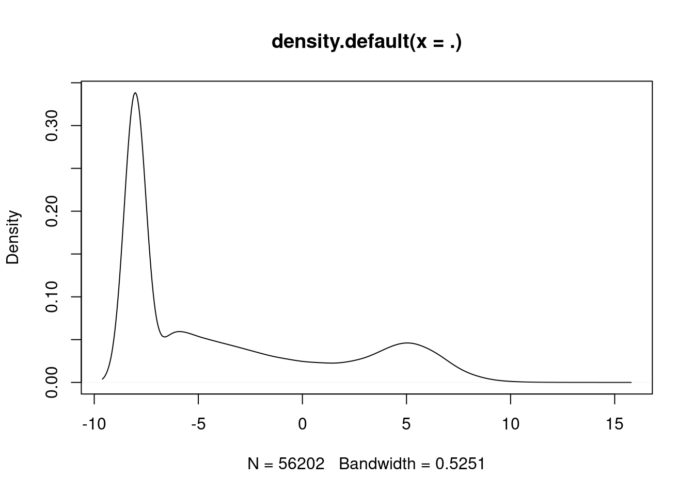

library(limma)
library(edgeR)
library(data.table)
library(magrittr)
library(ggplot2)
library(CePa)
library(tidyverse)
library(ggbeeswarm)
library(dplyr)
library(ReactomePA)
library(org.Hs.eg.db)
library(reactome.db)
library(goseq)
library(gplots)
source('data/heatmap-mik.R')
library(knitr)
library(kableExtra)
library(devtools)
library(viridis)
library(openxlsx)
set.seed(42)Differential Gene Expression Analysis
Summary
- Reloads processed data from 0_Setup.qmd
- Carries out differential expression analysis between BRCA and STAD cell lines with the top and bottom tertiles for dasatinib response.
Load packages
Load pre-processed data
# GDSC2
GDSC2 <- readRDS("data/GDSC2.rds")
# dasatinib_GDSC2
dasatinib_GDSC2 <- readRDS("data/dasatinib_GDSC2.rds")
# sort_dasatinib_GDSC2
sort_dasatinib_GDSC2 <- readRDS("data/sort_dasatinib_GDSC2.rds")
# voom_CCLE
voom_CCLE <- readRDS("data/voom_CCLE.rds")
# sort_voom_CCLE
sort_voom_CCLE <- readRDS("data/sort_voom_CCLE.rds")
# tissue_tool
tissue_tool <- readRDS("data/tissue_tool.rds")
# sort_tissue_tool
sort_tissue_tool <- readRDS("data/sort_tissue_tool.rds")Examine the data
# Check that all column names are identical between the CCLE and GDSC datasets
sum(colnames(sort_voom_CCLE)==sort_dasatinib_GDSC2$CCLE_Name)[1] 38# What types of data are shown in the GDSC2 dataset?
names(sort_dasatinib_GDSC2) [1] "DATASET" "NLME_RESULT_ID" "NLME_CURVE_ID" "COSMIC_ID"
[5] "CCLE_Name" "SANGER_MODEL_ID" "TCGA_DESC" "DRUG_ID"
[9] "DRUG_NAME" "PUTATIVE_TARGET" "PATHWAY_NAME" "COMPANY_ID"
[13] "WEBRELEASE" "MIN_CONC" "MAX_CONC" "LN_IC50"
[17] "AUC" "RMSE" "Z_SCORE" "CDH1" Differential expression analysis
# Create groups for comparison
group <- ifelse(sort_dasatinib_GDSC2$AUC > median(sort_dasatinib_GDSC2$AUC), "High", "Low")
# How many cell lines are in each group?
table(group)group
High Low
19 19 # Visualize the ranges of AUC values in each group.
ggplot(sort_dasatinib_GDSC2, aes(x = group, y = AUC)) +
geom_boxplot() +
labs(title = "AUC Distribution by Group",
x = "Group", y = "AUC") +
theme_minimal()# Create the design matrix.
design <- model.matrix(~group); colnames(design) <- c("Mean", "HighVsLow")
# Fit the linear model.
fit <- lmFit(sort_voom_CCLE, design) %>% eBayes(.)
# Create the top table of DE genes, and ensure that it's sorted by adjusted p-value.
top_table <- topTable(fit, coef = "HighVsLow", adjust = "BH", n = nrow(sort_voom_CCLE)) %>%
arrange(adj.P.Val)
# Tidy up the environment.
rm(list = c("group", "design", "fit"))Explore the differential expression data
# Plot the counts distribution of the gene with the smallest adjusted p-value across these cell lines.
sort_voom_CCLE[,1] %>% density(.) %>% plot(.)
# How many genes are significantly differentially expressed at α = 0.05?
sum(top_table$adj.P.Val < 0.05)[1] 5# Plot fold change in AUC against adjusted p-value.
# Create new columns in top_table for plotting.
top_table$logAdjP <- -log10(top_table$adj.P.Val)
top_table$significant <- (top_table$adj.P.Val < 0.05) & (abs(top_table$logFC) > 1)
# Define the adjusted p-value threshold line.
adj_p_thresh <- -log10(0.05)
# Plot.
ggplot(top_table, aes(x = logFC, y = logAdjP)) +
geom_point(aes(color = significant), size = 1) +
scale_color_manual(values = c("black", "red")) +
geom_hline(yintercept = adj_p_thresh, linetype = "dashed", color = "blue") +
geom_vline(xintercept = c(-1, 1), linetype = "dashed", color = "blue") +
labs(title = "Volcano Plot (Adjusted P-values)", x = "log2 Fold Change", y = "-log10(Adjusted P-value)") +
theme_minimal()# Tidy up the environment.
rm(list = c("adj_p_thresh"))Save processed objects as .rds files
# top_table
saveRDS(top_table, file = "1_output/top_table.rds")